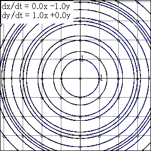

The figure shows the curves by the simultaneous equations:
dx/dt = a x + b y where a = 0,b = -1,c = 1 and d = 0. Every curve passes a grid point when t = 0. Now dx/dt = -y and dy/dt = x that the curves are circular.
Grasp the concept while observing other examples. |
 |